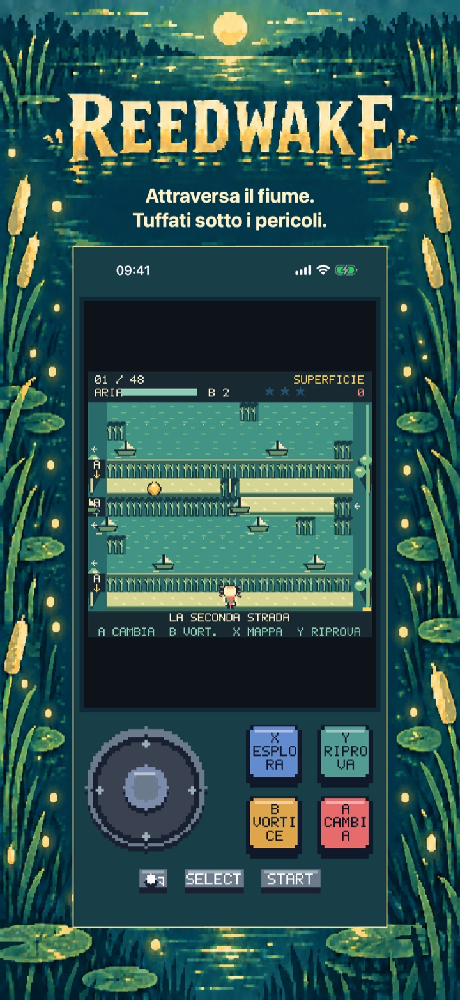
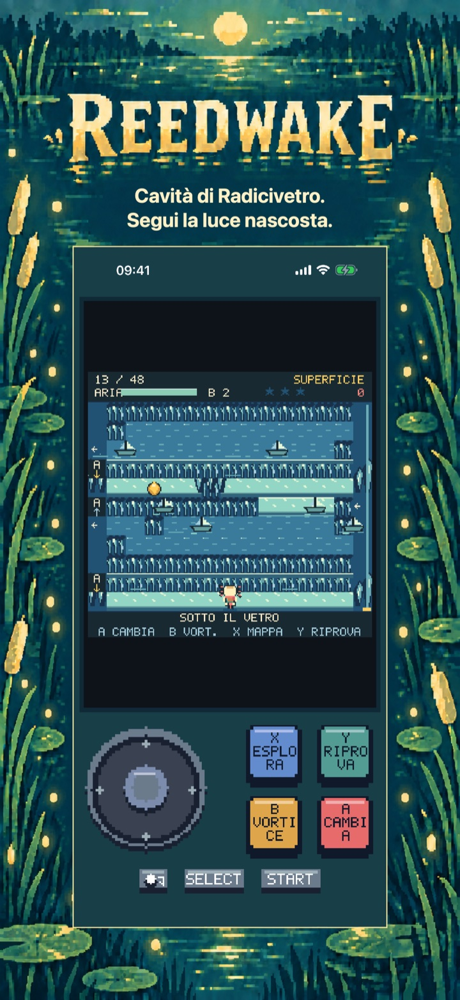
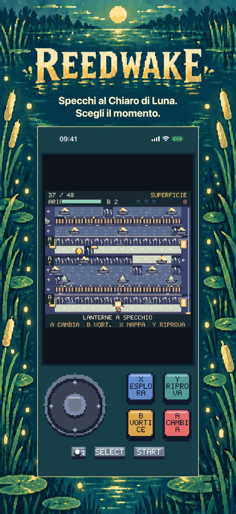
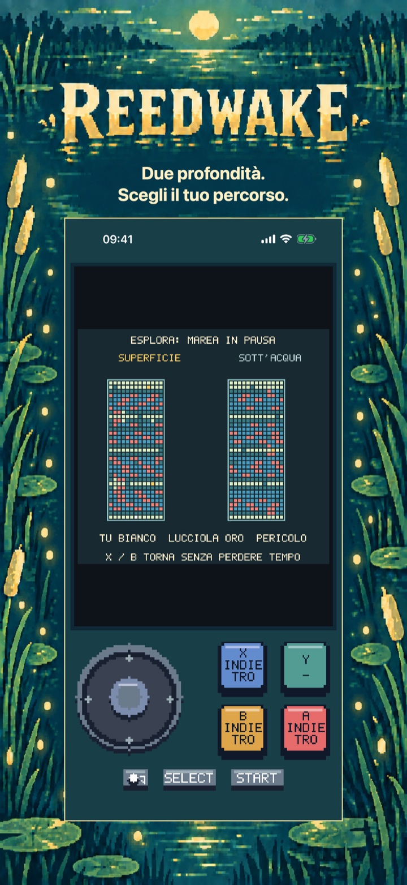
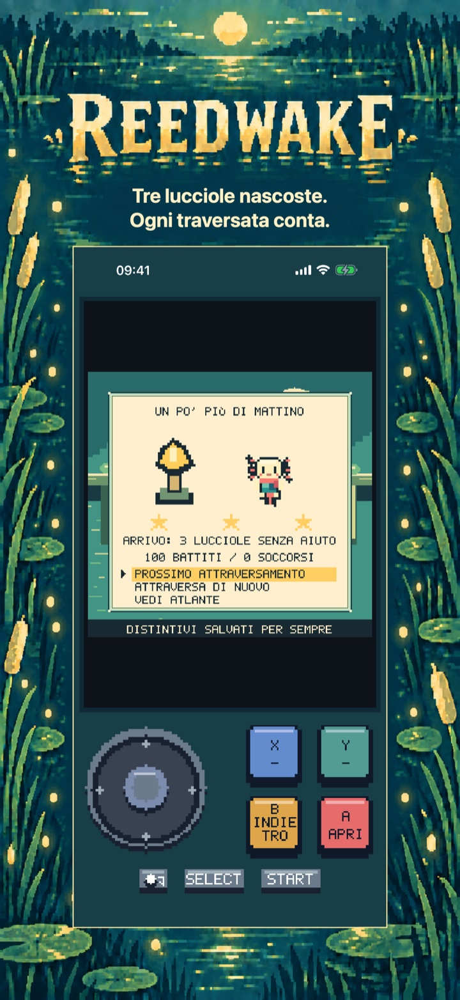
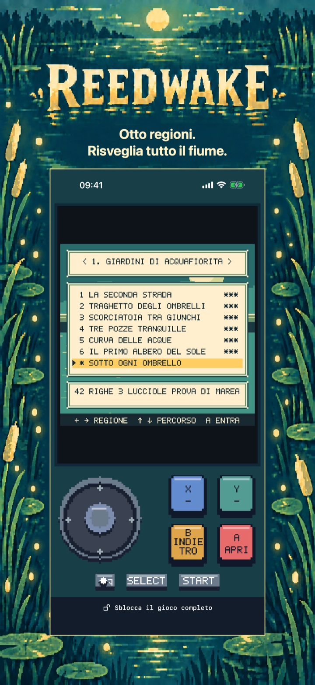

Reedwake: Avventura sul fiume
Reedwake: Avventura sul fiume
Due profondità, un fiume da risvegliare. Attraversa le correnti, tuffati sotto i pericoli e riaccendi otto alberi del sole. Prova gratis le prime sei traversate.
In arrivo sull’App Store
I primi sei attraversamenti narrativi dei Giardini di Acquafiorita sono gratuiti.

Il viaggio
Attraversa il fiume su due livelli di profondità
X esplora entrambi i livelli senza perdere tempo. START mette in pausa. Le impostazioni offrono ritmo lento e movimento ridotto. L’atlante ha 48 percorsi narrativi e otto prove di marea facoltative.
Regioni
Prove di marea
Livelli di profondità
Inizia con una regione introduttiva completa
Giardini di Acquafiorita: i primi sei attraversamenti narrativi.
I primi sei attraversamenti narrativi dei Giardini di Acquafiorita sono gratuiti.
Continua il viaggio di Nim
Sblocca altre sette regioni, 42 attraversamenti narrativi, tutte le otto prove di marea e la storia completa con finale.
Acquisto una tantum · Senza annunci · Senza abbonamento
Prezzo base in Spagna: 3,99 €; Apple stabilisce i prezzi degli altri store.
Reedwake: Avventura sul fiume
Tuffati, schiva, riaccendi
Risveglia il fiume, una traversata alla volta.
Guida Nim in un'avventura fluviale in pixel art con due profondità da esplorare. Salta tra gli ostacoli in movimento in superficie, tuffati sotto il trambusto e trova un luogo sicuro per riprendere fiato. I soffitti di radici e le secche impediscono di aggirare tutto usando una sola profondità: osserva il fiume, scegli il momento e cambia livello.
UNA PICCOLA CAMPANA CHE CAMBIA TUTTO La campana del vortice ferma i pericoli per pochi preziosi battiti. Esamina entrambe le profondità mentre il tempo è sospeso e prepara la prossima mossa. Il ritmo lento rallenta l'azione senza ridurre le ricompense e conserva record separati.
OTTO REGIONI DA RIACCENDERE Il gioco completo include 48 traversate della storia in otto regioni e otto prove di marea facoltative. Raccogli tre lucciole su ogni percorso, ottieni fino a 168 distintivi, incontra i custodi del fiume e ripristina gli otto alberi del sole. I salvataggi ai punti di controllo aiutano a riprovare e i progressi locali ricordano il tuo viaggio.
UN PRIMO CAPITOLO COMPLETO E GRATIS Gioca gratis tutte e sei le traversate dei Giardini di Acquafiorita. Un unico acquisto permanente del Gioco completo sblocca le altre sette regioni, le 42 traversate della storia rimanenti, tutte le otto prove di marea e la storia completa con il suo finale. Niente pubblicità, abbonamenti, consumabili o tentativi a pagamento. Impostazioni, esplorazione e ritmo lento restano disponibili nella parte gratuita. Puoi ripristinare gli acquisti e la Condivisione in famiglia è supportata.
GIOCA A MODO TUO Passa dallo stick analogico alla croce direzionale sullo schermo. Usa i quattro pulsanti di azione, un controller compatibile o una tastiera fisica. Gioca in italiano, inglese, spagnolo, francese o tedesco. Non serve un account: progressi e impostazioni restano sul tuo dispositivo.
Dentro il gioco
Dentro il gioco
Le sei schermate mostrano il viaggio sul fiume in ordine: meccanica principale, due nuove regioni, un puzzle più profondo, un attraversamento risolto e la schermata dell’atlante.
Tuffati sotto i pericoli.

Segui la luce nascosta.

Scegli il momento.

Scegli il tuo percorso.

Ogni traversata conta.

Risveglia tutto il fiume.
Aiuto e assistenza
Hai domande su Reedwake?
Trova risposte pratiche su comandi, progressi salvati, capitolo gratuito e acquisto del gioco completo.
Come muovo Nim?
La guida del gioco spiega movimento, cambi di profondità e pericoli degli attraversamenti. Usa il comando di movimento per spostarti di una casella alla volta; l’azione A cambia livello quando il percorso lo consente.
La croce muove Nim di una casella per battito. Tieni una direzione per continuare a saltare. Raggiungi l’albero del sole sull’altra riva. Niente conto alla rovescia né limite di vite.
A permette di immergersi o risalire. I tetti di radici bloccano sopra, i fondali bassi sotto. Trova i varchi e cambia livello PRIMA di attraversare. Le frecce A indicano il livello aperto.
Dove vengono salvati i progressi?
Progressi negli attraversamenti, distintivi e impostazioni vengono salvati localmente su questo dispositivo. Reedwake non richiede un account. Eliminando l’app rimuovi i dati locali, salvo i normali backup del sistema operativo.
Cosa si può giocare gratis?
Giardini di Acquafiorita: i primi sei attraversamenti narrativi.
Cosa sblocca l’acquisto del gioco completo?
Sblocca altre sette regioni, 42 attraversamenti narrativi, tutte le otto prove di marea e la storia completa con finale.
Acquisto una tantum · Senza annunci · Senza abbonamento Prezzo base in Spagna: 3,99 €; Apple stabilisce i prezzi degli altri store.
Come ripristino un acquisto?
Apri la schermata d’acquisto del gioco completo e scegli Ripristina gli acquisti.
L’acquisto è in attesa o lo store non è disponibile. Cosa posso fare?
Un acquisto in attesa deve ancora essere autorizzato o completato; puoi continuare il capitolo gratuito e riprovare più tardi. Se lo store non si carica, controlla la connessione e riprova. Un acquisto o ripristino verificato sblocca il gioco completo mantenendo i progressi.